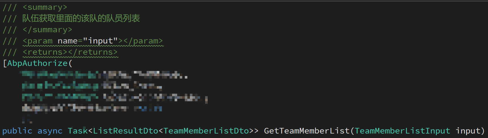
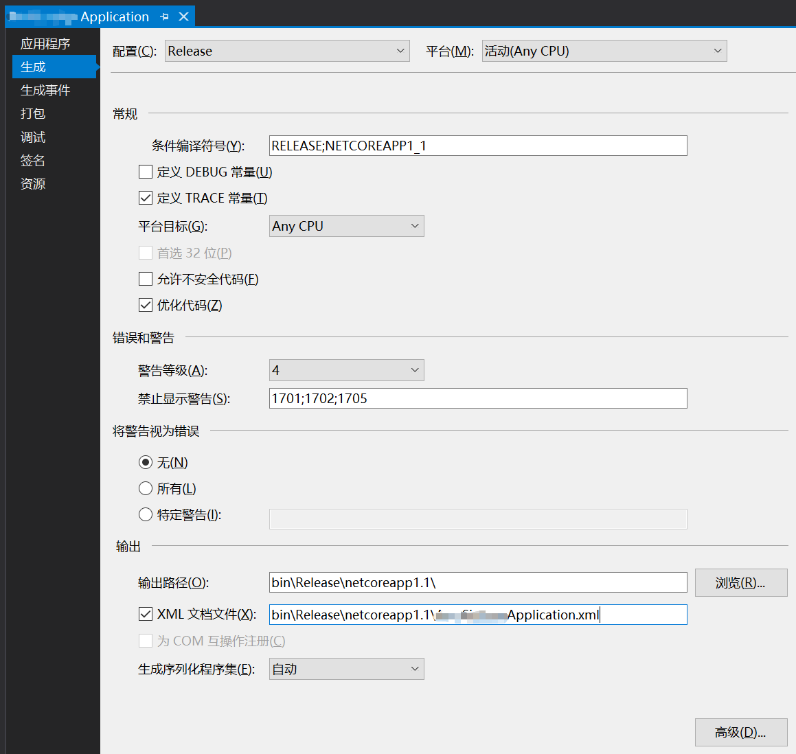
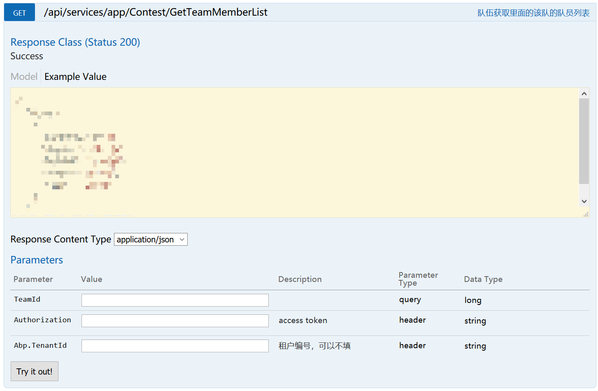

在 ABP 2.3 和 Vue 单页应用中的踩坑总结
前言
离 http://acm.nwpu.edu.cn 开发结束已经过去半年多了，我最近也放弃了考研的打算，现在也算是有空写博客了_(:3」∠)_。我就在这一篇博文中总结一下之前踩过的坑。注意，这篇博文中的后端技术仅限于 Asp.Net Core 1.1 及 AspNetBoilerplate 2.3.0。我不保证这里的解决方案在现在的 .net core 2.0 和 ABP 3.X.X 里还能一样工作。另外，直接写在ABP、VUE文档里或者用Google能直接查到的解决方案我也是懒得在这里再写一遍的。
这个网站是一个前后端完全分离的应用，后端用 ABP 来提供 api 供前端调用；前端是用 vue 编写的单页应用，在构建过程中会直接生成出目标 html 和 js，放进 .net core 的 wwwroot 中。在部署环境中由后端来提供前端的静态文件。
后端ABP及ASP.NET CORE相关
把 Service 的注释文档放进 Swagger UI 中
默认情况下 Abp 生成的 swagger 里面只有Service 的方法名，没有文档。我们可以把Service 方法里 summary tag的里面的注释输出成 swagger 的文档。效果是这样的：

会输出成：
第一步：输出文档
直接修改业务层 XXX.Application 的属性，生成 XML 文档：

第二步：展示文档
修改 XXX.Web.Host/Startup/Startup.cs 文件，加上两行代码：1
2using System.IO;
using Microsoft.Extensions.PlatformAbstractions;
找到同一个文件的 services.AddSwaggerGen 那一行，在配置函数里加上1
2
3
4
5
6
//Set the comments path for the swagger json and ui.
var basePath = PlatformServices.Default.Application.ApplicationBasePath;
var docPath = Path.Combine(basePath, "XXX.Application.xml");
options.IncludeXmlComments(docPath);
这里的 docPath 是生成的文档文件的目录。我的设定是在 production 模式下生成文档，所以这里直接定位了build出来的文档的位置。
将 authorization token 放进 cookie 中
一开始我们的后端API是遵照 rest 标准的。只把租户ID和Authorization Token放进http请求的header里面。后来发现这样做还不行。因为这个网站会对读取文件有权限控制，而浏览器在下载诸如图片之类的文件的时候（用img标签里的请求）不会自动在header里面加上。所以必须把这个放进cookie里面。不过我没有在ABP的文档里找到“从Cookie里面读取Authorization Token”之类的东西。所以我写了一个中间件从 Cookie 里面读取 Authorization 字段，放进 header 里面。
另外，对于租户ID而言，ABP会直接读取 Cookie 或者 header 中的 Abp.TenantId 作为租户id，所以这个是不需要用中间件处理的。
中间件代码：1
2
3
4
5
6
7
8
9
10
11
12
13
14
15
16
17
18
19
20
21
22
23
24
25
26
27
28
29
30
31
32
33using System;
using System.Threading.Tasks;
using Microsoft.AspNetCore.Http;
namespace AcmSignup.Identity
{
/// <summary>
/// 如果 header 中没有 authorization，就从cookie中取到并放进header中
/// </summary>
public class CookieAuthMiddleware
{
public const string CookieAuthKey = "OAuthToken";
public const string AuthorizationStart = "Bearer ";
private readonly RequestDelegate _next;
public CookieAuthMiddleware(RequestDelegate next)
{
if (next == null)
{
throw new ArgumentNullException(nameof(next));
}
_next = next;
}
public async Task Invoke(HttpContext context)
{
string token;
if (context.Request.Cookies.TryGetValue(CookieAuthKey, out token)
&& !context.Request.Headers.ContainsKey("Authorization"))
{
context.Request.Headers.Add("Authorization", AuthorizationStart + token);
}
await _next(context);
}
}
}
添加中间件：
在 Startup.cs 的 Configure 方法中加上一句 app.UseMiddleware<CookieAuthMiddleware>(); 。
注意，这一条必须写在 app.UseAbp() 前面。
在 .Net Core 的 XUnit 测试框架中跳过部分测试
我们使用了持续集成工具来运行单元测试。在我们的代码中，有一部分测试用例运行耗时比较长，并且不常改变。我们不需要在每次跑测试的时候都运行这些测试用例，又不想把这些用例删掉或注释掉，就可以用下面的方法来解决：
首先增加给测试用例增加Category：1
2
3
4
5[]
[]
[]
public async Task GetIcpcInformationStreamAsync_应该能获取到字符流()
...
然后在 travis-ci 的配置文件中把运行测试的命令从 dotnet test 改成 dotnet test --filter Category!=Slow。
这样，在 travis-ci 测试的时候不会运行在 Slow Category 中的测试用例。而我们自己执行的时候仍然可以直接用 dotnet test 来执行所有测试用例。
将用户与租户解绑
我们的项目中有一个需求，就是可以将同一个用户用在多个租户中。即网站中存在多个数据独立的租户，但用户必须独立于租户存在。也就是说，同一个用户可以在租户之间切换，框架在筛选数据时只根据header或者Cookie中的租户id来判断租户。而ABP默认的机制中，用户是处于租户内的，ABP会直接通过Authorization Token找出用户，然后根据用户的数据选出租户，这不是我们需要的。
在这方面，我做了比较多的修改，我刚刚查了一下git的提交记录，感觉要全整理出来还要花一些时间，所以这里就拖到以后再补充吧，先放上一些比较好总结的部分。
重载 session： 永远在 header 或者 Cookie 中获取租户信息
AbpSession 原先的行为并不是这样（我也忘了原先的行为是啥了，大家感兴趣的话可以自己去查ABP的源码）。我们可以继承一下原来的AbpSession，修改一下获取租户ID的行为，然后用依赖注入把新的ABPSession弄进去。
AcmSignupSession.cs
1 | using Abp.Configuration.Startup; |
在 XXXCoreModule.cs 的 PreInitialize 里面加上这一段
1 | // 注入自己的 Session |
覆写 Net Core 中的 UserManager 相关的代码，以取消租户绑定
UserManager 是 .net core 里面的，原有的 UserManager 只会在当前租户中获取数据，需要在外面包裹一层 UnitOfWork 的 using 来将租户 id 设为空。
跟 Session 一样，必须继承一下这个类，覆盖一些方法，然后用依赖注入把这个搞进去。不过在ABP默认的模板中，已经有项目自己的 UserManager 了，可以直接改。
例如：1
2
3
4
5
6
7
8[]
public override async Task<User> FindByEmailAsync(string email)
{
using (_unitOfWorkManager.Current.SetTenantId(null))
{
return await base.FindByEmailAsync(email);
}
}
这一类的都要改成这样。并且类似于 GetGrantedPermissionsAsync 之类的方法还要标记为 Obsolete 的。
我写了一个 ahk 脚本来生成所有可以重载的方法，适用于装了 Resharper 的 visual studio。只要启动脚本，定位到派生类的body里，然后狂按 f1 就可以了。
魔改 swagger，添加字段
我们需要直接在 swagger 里面添加 Authorization 和租户ID，填入的内容会被自动放进 header 里面，这样就能把 swagger 当临时的后台用了，效果是这样的:

这种效果可以通过添加 IOperationFilter 来解决。首先在 XXX.Web.Core 里面加上一个 AuthorizationHeaderParameterOperationFilter.cs：1
2
3
4
5
6
7
8
9
10
11
12
13
14
15
16
17
18
19
20
21
22
23
24
25
26
27
28
29
30
31
32
33using Microsoft.AspNetCore.Mvc.Authorization;
using Swashbuckle.AspNetCore.Swagger;
using Swashbuckle.AspNetCore.SwaggerGen;
using System.Collections.Generic;
using System.Linq;
namespace AcmSignup.Configuration
{
public class AuthorizationHeaderParameterOperationFilter : IOperationFilter
{
public void Apply(Operation operation, OperationFilterContext context)
{
if (operation.Parameters == null)
operation.Parameters = new List<IParameter>();
operation.Parameters.Add(new NonBodyParameter
{
Name = "Authorization",
In = "header",
Description = "access token",
Required = false,
Type = "string"
});
operation.Parameters.Add(new NonBodyParameter
{
Name = "Abp.TenantId",
In = "header",
Description = "租户编号，可以不填",
Required = false,
Type = "string"
});
}
}
}
然后在 Startup.cs 里面找到 services.AddSwaggerGen，加上一行 options.OperationFilter<AuthorizationHeaderParameterOperationFilter>();。现在是这样的：1
2
3
4
5
6
7//Swagger - Enable this line and the related lines in Configure method to enable swagger UI
services.AddSwaggerGen(options =>
{
options.SwaggerDoc("v1", new Info { Title = "AcmSignup API", Version = "v1" });
options.DocInclusionPredicate((docName, description) => true);
options.OperationFilter<AuthorizationHeaderParameterOperationFilter>();
});
前端
这一部分主要是讨论如何将 ABP 同 Vue 结合在一起。这段内容我以后再补上吧。。。
持续集成
用 travis-ci 同时测试 javascript 和 c#
本项目的前后端是放在同一个 git repo 中的，要测试的话需要使用 matrix 来分离前后端的项目。
.travis.yml1
2
3
4
5
6
7
8
9
10
11
12
13
14
15
16
17
18
19
20
21
22
23
24
25
26
27
28
29
30
31
32
33
34matrix:
include:
-
language: node_js
node_js:
- "node"
cache:
directories:
- frontend/node_modules
install:
- cd frontend
- rm .npmrc
- npm install
script:
- npm run lint
- npm run build
-
language: csharp
solution: ./backend/AcmSignup.sln
mono: none
dotnet: 1.1.0
dist: trusty
install:
- cd backend/test/AcmSignup.Tests
- dotnet restore
script:
- dotnet test --filter Category!=Slow
自动部署前后端
我还写了一个脚本，可以在 GitHub 上新建一个 release 的时候自动编译前后端并将结果放进 release 中。这样在服务器上部署的时候直接解压压缩包然后重启服务就好了。
这里的代码需要改一下才能在别的项目上运行。
.travis.yml1
2
3
4
5
6
7
8
9
10
11
12
13
14
15
16
17
18
19
20
21
22
23
24
25
26
27
28
29
30
31
32
33
34
35
36
37
38
39
40
41
42
43
44
45
46
47
48
49
50
51
52
53
54
55
56
57
58
59
60
61
62
63
64
65
66
67
68
69
70
71
72
73
74
75
76
77
78sudo: false
stages:
- name: test
- name: deploy
if: tag =~ ^v
matrix:
include:
- stage: test
language: node_js
node_js:
- "node"
cache:
directories:
- frontend/node_modules
install:
- cd frontend
- rm .npmrc
- npm install
script:
- npm run lint
- npm run build
-
language: csharp
solution: ./backend/AcmSignup.sln
mono: none
dotnet: 1.1.0
dist: trusty
install:
- cd backend/test/AcmSignup.Tests
- dotnet restore
script:
- dotnet test --filter Category!=Slow
- stage: deploy
sudo: true
language: csharp
mono: none
dotnet: 1.1.0
dist: trusty
before_install:
- sudo apt-get install -y nodejs
cache:
directories:
- frontend/node_modules
install:
- rm frontend/.npmrc
script:
- cd tools
- sh deploy-all.sh
- cd ..
before_deploy:
- zip -r dist.zip dist/*
- zip -r wwwroot.zip dist/acmsignup/wwwroot/*
deploy:
provider: releases
api_key: "你的 TOKEN"
file:
- dist.zip
- wwwroot.zip
skip_cleanup: true
on:
tags: true
tools/deploy-all.sh1
2
3mkdir ../dist
sh ./build-frontend.sh
sh ./build-backend.sh
tools/build-frontend.sh1
2
3
4
5
6
7rm -rf ../dist/acmsignup/wwwroot/index.html ../dist/acmsignup/wwwroot/favicon.ico ../dist/acmsignup/wwwroot/static
cd ../frontend
npm install
npm run build
cd dist
mkdir -p ../../dist/acmsignup/wwwroot
find . ! -type d | grep -v '.*.map$' | xargs tar -cf - | tar -C ../../dist/acmsignup/wwwroot -xvf -
tools/build-backend.sh1
2
3
4find ../dist/acmsignup/ | egrep -v '^../dist/acmsignup/$|^../dist/acmsignup/wwwroot' | xargs rm -rf
dotnet restore ../backend/src/AcmSignup.Web.Host/
dotnet publish -f netcoreapp1.1 -c Release ../backend/src/AcmSignup.Web.Host/
cp -r ../backend/src/AcmSignup.Web.Host/bin/Release/netcoreapp1.1/publish/* ../dist/acmsignup